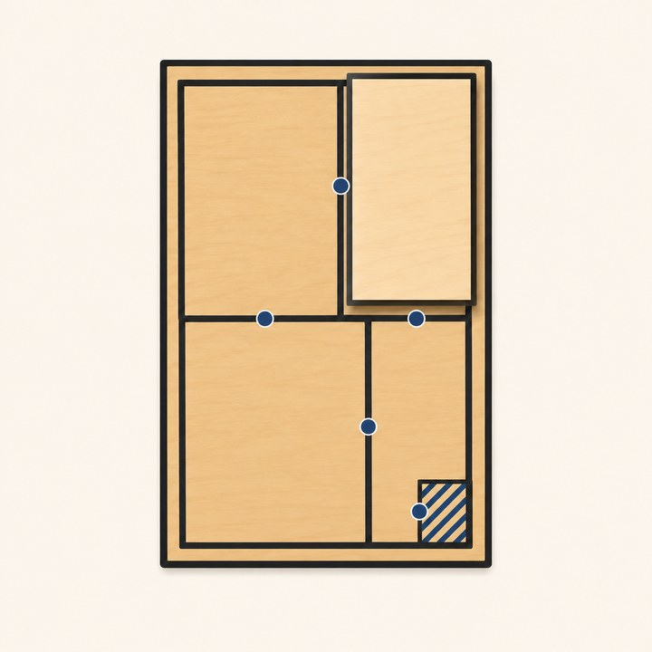

iPhone・iPad・Android の板取り・カットリスト
少ない材料で切り出して、
その図を店に見せる。
DIY でつくる物の部材を入れると、定尺の合板や長物から少ない材料で切り出す並べ方を計算します。切る順の番号と寸法のついた板取り図は、ホームセンターのカット受付にそのまま見せられます。
App Store・Google Play で配信予定買い切りで全部の機能が使えます。アプリ内課金・サブスクリプション・広告はありません。

こんな困りごとのために
何枚買えばいいか分からない
部材の寸法と数を入れると、定尺の板や長物から切り出す並べ方と、使う数を出します。
店で切ってもらう図を描くのが手間
板ごとに、部材の寸法と切る順の番号をつけた図を、白地に大きな字で出します。PDF・画像・印刷で。
パネルソーで切れない並べ方
端から端までの通しの線だけで並べます。木目の向きも部材ごとに固定できます。
刃の厚みで足りなくなる
刃の厚みと耳落としを数に入れます。入らない部材は理由をつけて知らせます。
端材を使い切りたい
手元の端材の大きさを入れると、新しい材料より先に端材から切り出します。
材料費の見当がつかない
定尺の値段と1カットの値段を入れると、合計を出します（値段はご自身で入れてください）。
できること
| 板 | 合板・MDF など・通しカット・木目の向き・刃の厚み・耳落とし |
|---|---|
| 長物 | 2×4・角材・パイプ・長い部材の順に切り出す・ちょうどの長さは切らずに使う |
| 材料 | よくある定尺の寸法・自分の材料・手元の端材 |
| 図 | 切る順の番号・寸法・余り・入らない理由・PDF・画像・印刷 |
| 費用 | 材料費とカット代の合計（値段は本人が入れる） |
| データ | iCloud で iPhone と iPad をそろえる・ゴミ箱（30日）・アカウントなし・解析と広告なし |
刃の厚みやカットの決まり・値段は店ごとにちがいます。カットを頼む店でお確かめください。
使い方・プライバシーポリシー・利用規約もご覧ください。